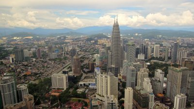

Awesome places to visit
capital: kuala lumpur
Early Kuala Lumpur was a small town that suffered from many social and political
problems – the buildings were made of wood and atap (palm frond thatching) that were prone to fire,
lack of proper sanitation plagued the town with diseases, and it suffered from a constant threat of flooding.
The town became embroiled in the Selangor Civil War due in part to the fight for control
.jpg)
Cameron
25 Things to Do in The Cameron Highlands (Malaysia)
The Cameron Highlands is the name of a scenic .
The highlands were founded by a British colonialist named Sir William Cameron and were named after him,
and were modeled on a traditional English village. The aim of the Cameron Highlands was to provide residents
in the lowlands with some respite during the summer months and allow them to enjoy the cooler climate here,
and you will find English influences all over the region.
Turtle beach
Layang-Layang is another island off the coast of the federal territory of
Labuan in East Malaysia, located off the northwestern coast of Kota Kinabalu,
Sabah. It might seem that you are in the middle of nowhere!
There is pretty much nothing to do here